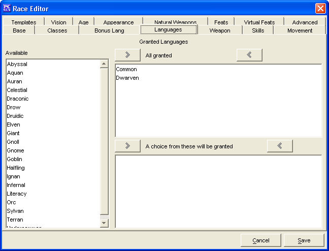

Race Editor: Languages Tab

The Languages Tab is used to add a Granted Languages for the Race being
created.
The three Granted Languages windows, Available, All Granted
and A choice from these will be granted are used to create a list of
Bonus Languages.
- The two sets of Add and Remove buttons will move the highlighted Granted
Languages between the 3 windows. Double clicking does not work in this window.
- The Languages in the All Granted box are the languages that all members
of this race know automatically.
- A choice from these will be granted are additional languages that are
only available when the character is created. The selection is limited by
intelligence.
The Cancel and Save buttons, which appear on every tab, are used
to either cancel the Race creation or save it to the customRaces.lst file.